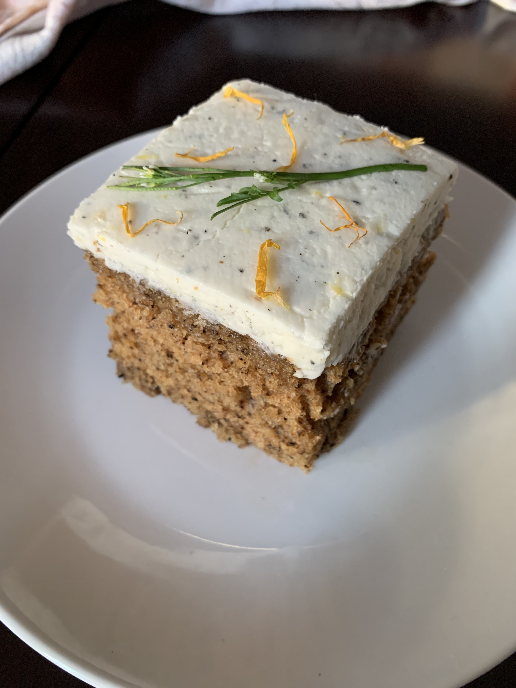

Bergamot Earl Grey Sourdough Cake

Ingredients
- 1 cup sourdough starter discard
- 1 cup milk + 1 T earl grey tea boil & steep 15 mins (any milk will work, plant based, whole, skim etc)
- 1 cup sugar
- 3/4 cup oil (any neutral oil)
- 2 flax eggs (beaten)
- 2 teaspoons vanilla
- 1/2 cup citrus juice (Bergamot or Lemon is best since it’s commonly paired with earl grey tea)
- 2 tablespoons lemon zest (packed)
- 2 2/3 cups flour
- 2 teaspoons baking soda
- 1 teaspoon salt
- 1 T + 1/2 t dried earl grey tea (mix in flour)
Instructions
- Preheat the oven to 350F and lightly grease a 9x13 pan.
- In a large bowl, whisk together the sourdough starter, milk, sugar, oil, flax eggs, vanilla, lemon juice and lemon zest to combine.
- In a medium bowl, whisk together the flour, baking soda, dried early grey tea, and salt to combine. Slowly add the flour mixture to the first large bowl and stir together to combine until smooth (you can use a hand mixer if desired).
- Transfer the batter to the prepared pan and spread it out until smooth. Bake for approximately 35 minutes, until a toothpick inserted in the centre comes out clean. Cool and serve or freeze any leftover cake for up to 1 month in a sealed container
Earl Grey Buttercream Icing (Optional)
- 1/2 C butter
- 3 T citrus juice (lemon is good)
- 3 C confectioners sugar
- 1 T ground earl grey tea
Instructions
- Beat all ingredients on high for 2-3 mins
- Once cake is cool, ice and decorate as desired.